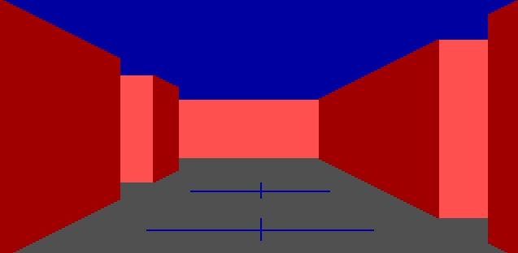
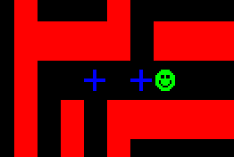
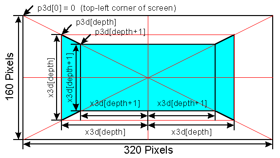
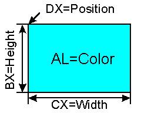
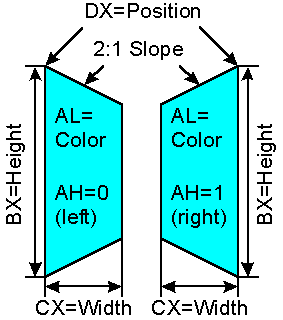

| ECE291 |
Computer Engineering II |
Lockwood, Fall 1996 |
Machine Problem 4: The Maze (Part II: 3D-View)
| Assigned |
Tuesday November 5, 1996 |
| 15-Point Checkpoint |
Thursday November 14, 1996, 5pm |
| Due Date |
Tuesday November 19, 1996, 5pm |
| Purpose: |
Video Graphics and image algorithms
|
| Points | 50 |
Introduction
In this machine problem you will add a 3-dimensional view of the
MP3 maze that allows viewing the maze from the point-of-view of the mouse
in the maze.
The following diagram is a screen-dump of the running program:

The internal representation of the maze is the same as it was for MP3.
The following diagram is a screen-dump of the corresponding view
on the 2-dimensional maze.

The mouse is looking West. Note that there is a hallway to the right
and two hallways to the left.
Implementation
A 3D perspective can be implemented by placing
a vanishing point in the center of the screen.
Objects at an infinite depth would be located in the center of the screen
and have a height of zero.
Objects at each depth
become larger by scaling their size by a constant.
Rectangular objects can be represented by drawing simple geometric shapes
that follow the diagnonal, horizontal, or vertical guidelines. A back
wall, for example, can be represented by a rectangle. A sidewall can
be represented by a trapezoid.
To avoid time-consuming multiplication, arrays can be defined that
contain pre-calculated positions and sizes of an object
at each depth. Due to the limited resolution of a video screen
these arrays can be small. Once the size of an object is less
than the size of a pixel, there is no purpose in plotting it on the screen.

For this machine problem, we will be using a screen resolution of 320x200
pixels. At this resolution, it is possible to render full-motion
video (30 frames-per-second) on a Pentium-class computer (such as those
in our lab). Two arrays will be defined at this resolution:
one to hold pixel coordinates and the other to hold object sizes.
The sizes of the arrays are defined by the constant MAXDepth3d.
The array p3d holds the top-left position of a 3D element
at each depth. The array x3d holds the size of a 3D element.
To nearly fill the screen and preserve simple X/Y scaling values; we
will choose an aspect ratio of 2:1. The diagram above shows the
coordinates and size of a back wall and two side walls at a given depth.
The rendering algorithm begins from the most distant point down
the hallway. At this depth, a rectangle is drawn to represent
the back wall. At each decreasing depth level, rectangles and
trapezoids are drawn to represent ceilings, floors, walls,
and hallway openings.
The 3-D routines of MP4 interface to MP3 by a single procedure.
UpdateGRScreen is called instead of UpateTextScreen when
the program is in graphics mode. Maze elements are drawn
by looking down a hallway in the direction that the mouse is facing.
This machine problem is limited to displaying mazes
with hallways that are no more than one unit wide.
Changes to MP3
Other than the 3D rendering, only a few enhancements were made to
the existing code of MP3.
- In 2D mode, it is now possible to see the direction of the mouse.
- The keyboard was redefined to mean: forward, back, turn left, turn right.
- UpdateScreen calls UpdateTextScreen or
UpdateGRScreen, depending on the VidMode.
- It is possible to toggle the status decision points by pressing 'v'.
- It is possible to walk away from a node once AutoSolve finishes.
- You can abort AutoSolve by pressing any key
- You can load other mazes by typing 'mazec filename'
- You can invoke the _TestGeometry routine by typing 'mazec test'
You are encouraged to use your MP3 routines in MP4.
There is, however, no penalty for using library versions
of the MP3 procedures.
Procedures
- DrawBox
- Purpose: Draw a filled rectangular box on the screen.
- Inputs
- DX: Starting Position of box (specified as offset from zero)
- CX: Width of box (number of horizontal pixels)
- BX: Height of box (number of vertical pixels)
- AL: Color
- Outputs: Writes to screen
- Registers: Preserves any that are modified
- Assumptions: The width of the box is a multiple of two.
- Notes: Invoking the main program as 'mazec test' will call
the _TestGeometry routine.
- Description:
This routine draws a filled rectangular box on the screen. The
starting position is determined by DX. DX is specified as
an offset from the starting location of the video page
(i.e., DX=320*y + x). You may optimize your code with the assumption
that the width will always be a multiple of two (i.e., an even number).

- DrawTrap
- Purpose: Draw a filled trapezoid on the screen
- Inputs:
- DX: Starting Position of trapezoid (specified as offset from zero)
- CX: Width of box (number of horizontal pixels)
- BX: Height of box (number of vertical pixels)
- AL: Color
- AH: Direction (0=Left, 1=Right)
- Outputs: Writes to screen
- Registers: Preserves any that are modified
- Assumptions: The width of the trapezoid is a multiple of two.
- Notes: Invoking the main program as 'mazec test' will call
the _TestGeometry routine.
- Description:
There are two types of trapezoids that we need to draw for this
machine problem -- Left-sided and Right-sided. This subroutine should
perform either as determined by the value in AH. The starting position
refers to the top-corner of the object, as shown below. The height
refers to the total height of the object. The slanted lines for this
routine will have a fixed slope of 2:1, i.e., the line advances two
horizontal pixels for each vertical pixel. The sloped line continues
until the object has reached full width.

- DrawBackWall
- Purpose: Draw the solid wall at the end of a hallway.
- Input: SI: Depth of Wall
- Outputs: Writes to screen
- Registers: Preserves any that are modified
- Uses: DrawBox, p3d, x3d
- Constants: REDBR
- Description:
The back wall is a rectangular box in the center of the screen
that represents the wall at the end of the hallway.
The depth (SI) of the wall refers to the distance between
the position of the mouse and the location of the wall.
As the mouse moves further from a wall, the size of the wall
decreases.
The size and position of the box can be calculated as
a function of the depth (SI), the position array (p3d), and the
size array (x3d).
Note that the back wall is located at one depth greater than the value
of SI. The color of the back wall should be bright red
(as defined by the constant: REDBR).
- DrawSides
- Purpose: Draw sides of the hallway to represent walls or openings
at a given depth.
- Input: SI: Depth of Wall
- Outputs: Writes to screen
- Registers: Preserves any that are modified
- Uses: DrawBox, DrawTrap, p3d, x3d, Side3d[SI]
- Constants: RED, REDBR, LSW, RSW
- Description:
This routine draws the walls or openings along the left and right
sides of the hallway at a given depth (SI). If there is a wall along
a side, this routine will draw a red trapezoid.
If there is an opening,
the routine will draw a bright-red (REDBR) rectangle. The presence of
a sidewall can be determined by testing the value of Side3d[SI] with
LSW and RSW.
The sidewalls appear trapezoidal because of the 3D perspective.
The side of wall closer to the mouse appears larger than the side of
the wall that is further. The absolute size and position of the sidewalls
is determined as a function of the position and size arrays
(p3d and x3d).
Recall that
the position of a right-trapezoid is given by the location of its
top-right corner.
Openings appear as narrow rectangles because the
the mouse views them from at a head-on perspective. As with the back wall,
they are colored bright-red to indicate direct illumination.
Because hallways are limited to a single-unit width, it is not
necessary to extend the width of an opening to the far side of the screen.
It is safe to assume that the sidewall at the next level (SI-1) will
draw on that region of the screen.
- DrawFloorCeiling
- Purpose: Draw ceiling and floor at a given depth.
- Inputs: SI: Depth
- Outputs: Writes to screen
- Registers: Preserves any that are modified
- Uses: DrawBox, p3d, x3d, View3d[SI]
- Constants: GRAY, BLUE, GREEN, RED, YELLOW
- Description:
The "ceiling" refers to the blue sky above the maze.
The "floor" refers to the gray concrete tile on the ground.
This routine draws two narrow horizontal rectangles to represent
the visable portion of these elements at depth SI.
To represent colored decision points and the endpoint of the maze,
crosshairs may be drawn on the floor. If the value of View3d[SI]
is DECPOS, VISPOS, FINPOS, or ENDPOS, a BLUE, GREEN, RED, or YELLOW
crosshair should be drawn on the screen.
The width of the crosshair should be one-half that of
the width of the floor tile. The height of the crosshair should be
the full hight of the floor tile.
- DrawGRScreen
- Purpose: Draw the graphic screen
- Inputs: SI: Maximum Depth
- Uses: DrawBackWall, DrawFloorCeiling, DrawSides
- Registers: Preserves any that are modified
- Description:
Now that you can draw walls, ceilings, floors, sidewalls, and openings,
it is surprisingly simple the draw the entire graphics screen. Starting
at the depth of the furthest wall (given by SI), this routine first draws
the back wall then draws then calls DrawFloorCeiling and DrawSides for
represent the view at each depth closer to the mouse. Upon finishing
this routine at depth=0, the entire screen should be filled with
the 3d view of a hallway.
For testing purposes, you may wish to test your routines by initializing
View3d and Side3d with sample values, setting SI to the depth of your
hallway, and calling this routine.
- UpdateGRScreen
- Purpose: Interface to existing maze program
- Inputs: DI=current position maze, AL=current direction
- Modifieds/Uses: View3d[], Side3d[], w3d[], DrawGRScreen
- Registers: Preserves any that are modified
- Constants: MAXDepth3d, LSW, RSW
- Description:
This procedure is the 3d-equivalent of UpdateTextScreen.
This single routine is the interface between the existing code in MP3
and the new 3d view created by this machine problem.
As before (with UpdateTextScreen), DI holds the current position in _MAZE
and AL holds the current direction.
By examinging the contents of _MAZE in the direction of AL, this routine
fills in the values of the arrays View3d[] and Side3d[]. This routine
first loads View3d[0] with _MAZE[DI]. For each value of _MAZE in
the direction of AL, View3d is loaded with the value in _MAZE until
hitting a wall or reaching MAXDepth3d (a constant which determines
how far the mouse can see).
For each element in the View3d array, a corresponding byte is stored in
Side3d array. The Side3d array refers to whether or not the element
to the left or right of the maze contains a wall or a opening (a hallway).
Each element of Size3d should be initialized to zero.
If there is a
wall to the left of the current position,
the element in Side3d should be OR'd with the constant
LSW (Left-Side-Wall).
Likewise, if there is a
wall to the right, the element in Side3d should be OR'd with
the constant RSW (Right-Side-Wall).
Now that the views have been initialized, set SI to the depth of
the furthest wall (or MAXDepth3d if you are looking down a really long
hallway) and call UpdateGRScreen to finish your machine problem.
Points
You earn points by replacing each subroutine with your own code.
Your score will be proportional to the percentage of the code that
your write yourself. The breakdown in points is given below. Your
routine MUST perform all functions of the subroutine to receive credit.
You are urged to test each routine as you write it. It is nearly
impossible to debug a program if there are errors in the routines
that it calls. Note that library routines always call other library
routines. You need to call your routines directly to verify their
functionality.
You are encouraged to start early. There will be a 15-point
checkpoint on Thursday, November 14. At this point, you will earn up to
15 points for already-completed routines. On the deadline, you
can earn the remaining 35 points.
You are encouraged to
write efficient code using the techniques studied in this class
(such as table lookups and fast string operations).
You can earn two points by demonstrating that your program, in graphics mode,
at delay=0 can use AutoSolve to find the solution as fast as or faster than
Lockwood's code (recall that the library code purposefully contains
extraneous code).
You will earn 1 point if your code is no more than 25% slower.
Benchmarks will be done in the lab
using the Pentium computers at the time you demonstrate your MP.
- DrawBox: 7 pts
- DrawTrap: 8 pts
- DrawBackWall: 5 pts
- DrawSides: 7 pts
- DrawFloorCeiling: 8 pts
- DrawGRScreen: 5 pts
- UpdateGRScreen: 8 pts.
- Performance: 2 pts
Starting Files
You will begin MP3 with the following files:
- MAZEC.EXE: A fully functional executable
program using library routines
- MAZE.DTA: The maze definition file.
- MAZE.DEF:
Useful constants defined for this program
- MAZEC.C: Complete source code the C program which reads
MAZE.DTA, determines the decision points, stores the
data in _MAZE, and initiates the program.
(You shouldn't need to modify this program)
- MAZE3D.ASM:
A starting point for the program. You are given
the routines for reading and processing keyboard input, calling
the other functions, delaying movement, and interfacing with the
C program.
(Add your routines here and comment out the EXTRN lines)
- MAKE.BAT: A short batch program which compiles, assembles, and links
the programs.
- LIB291.LIB: The standard ECE291 library routines.
(you can always use these routines freely)
- LIBMP4.LIB: Library versions of the six routines that you need
to write.
You can copy all of these files to your directory with the following command:
xcopy /s E:\ece291\mp4 F:\mp4
Updates to MAZE.DEF
; Additions to MAZE.DEF for MP4
; John Lockwood; 10/96
; Video Memory Segments (Store in ES)
VIDGRSEG EQU 0A000h
; VidMode Options
TEXTMODE EQU 0
GRMODE EQU 1
; New Mouse Cursors (Mouse North,East,South,West)
MNCH EQU 0000101000011110b
MECH EQU 0000101000010000b
MSCH EQU 0000101000011111b
MWCH EQU 0000101000010001b
; Mode 13 Predefined Palette Colors (use for coloring)
CYAN EQU 3
GRAY EQU 8
BLUE EQU 1
RED EQU 4
GREEN EQU 2
YELLOW EQU 8+6
REDBR EQU 12
MAGENTA EQU 5
; Constants for Side3d Array
LSW EQU 10000000b ; Left Side Wall
RSW EQU 01000000b ; Right Side Wall
LRSW EQU 11000000b ; Left & Right Side Wall
; Maximum depth of 3d-view
MAXDepth3d EQU 9
; Macro to switch to Graphic or Text
GMODE MACRO
push ax
mov ax,VidGrSEG
mov es,ax
mov ah,00h
mov al,13h
int 10h
pop ax
ENDM
TMODE MACRO
push ax
mov ax,VidSEG
mov es,ax
mov ah,00h
mov al,02h
int 10h
pop ax
ENDM
Updates to MAZE3D.ASM (was MAZE.ASM)
; Additions to MAZE3D.ASM for MP4
; External Routines (called from C)
PUBLIC _TestGeometry
; Public variables (used by C Program and libmp4)
PUBLIC View3d, Side3d, P3d, X3d, W3d, VidMode
; Public variables (used by libmp3)
PUBLIC updatescreen
; =================== External Library Procedures =======================
; LIBMP4 Routines (Comment these out to use your own code)
EXTRN DrawBox:near
EXTRN DrawTrap:near
EXTRN DrawBackWall:near
EXTRN DrawSides:near
EXTRN DrawFloorCeiling:near
EXTRN DrawGrScreen:near
EXTRN UpdateGrScreen:near
; ============================= Variables ===============================
VidMode db TEXTMODE ; Can be TEXTMODE (default) or GRMODE
; Pointed Mouse Attribute:Character Lookup Table (North, East, South, West)
mousech dw MNCH, MECH, MSCH, MWCH
View3d db HALL,HALL,HALL,HALL,HALL,HALL,HALL,HALL,HALL,HALL,WALL
; The elements in _MAZE, looking down a direction
; Sample data (your program will change these)
Side3d db LSW, LRSW,LRSW,LSW, RSW, LRSW, 0 ,LRSW, 0 ,LRSW,LRSW
; The elements to the side (Bit7=1=LeftSideWall | Bit6=1=RightSideWall)
; Sample data (your program will change these)
; 3D Coordinate Arrays
; Widths of walls for each depth (Large at front, small in back)
w3d dw 20, 30, 24, 20, 16, 14, 12, 10, 8, 4, 2
; Sum of W3d (i.e., total size at each depth)
X3d dw 160,140,110, 86, 66, 50, 36, 24, 14, 6, 2
; Position Along the upper-left diagonal (screen offset)
; Example: At Level 2, Top-Left corner is at Column 20, Row 10
P3d dw 0
dw 20+320*10
dw 20+30+320*(10+15)
dw 20+30+24+320*(10+15+12)
dw 20+30+24+20+320*(10+15+12+10)
dw 20+30+24+20+16+320*(10+15+12+10+8)
dw 20+30+24+20+16+14+320*(10+15+12+10+8+7)
dw 20+30+24+20+16+14+12+320*(10+15+12+10+8+7+6)
dw 20+30+24+20+16+14+12+10+320*(10+15+12+10+8+7+6+5)
dw 20+30+24+20+16+14+12+10+8+320*(10+15+12+10+8+7+6+5+4)
dw 20+30+24+20+16+14+12+10+8+4+320*(10+15+12+10+8+7+6+5+4+2)
dw 20+30+24+20+16+14+12+10+8+4+2+320*(10+15+12+10+8+7+6+5+4+2+1)
; ================= Procedures (Your code goes here) ====================
; ============================== Free Code ==============================
_TestGeometry proc far
; Geometry Test Cases
; This routine is called when you run "mazec test"
; Use and modify this routine to debug your code.
PUSH AX
PUSH BX ; Save Registers
PUSH CX
PUSH DX
PUSH DS
PUSH ES
MOV AX,CS ; Set DS=CS
MOV DS,AX
GMODE ; Switch to 320x200 Graphics-Mode (MACRO)
; --- Draw a Rectangular Box ---
mov dx,160-20 ; Center of screen less width/2
mov cx,40 ; 40 Pixels Wide
mov bx,40 ; 40 Pixels Tall
mov AL,RED ; Colored Red
call drawbox ; Width unchanged
; --- Draw a Left-Sided Trapezoid at left of screen ----
mov dx,0 ; Position
mov bx,80 ; 80 Pixels Tall
mov AL,GREEN ; Colored green
mov AH,0 ; Left-Sided trapezoid
call drawtrap ; Width (CX) unchanged
; --- Draw a Right-Sided Trapezoid at right of screen ---
add dx,320 - 2 ; Position (with -2 correction)
mov AH,1 ; Right-Sided
mov AL,BLUE ; Colored blue
call drawtrap ; Width (CX), Height(BX), and Color(AL) Unchanged
; --- Wait for a keypress while we look at the screen ---
call kbdin
TMODE ; Switch back to 80x25 Text-Mode (MACRO)
call showlibuse
POP ES
POP DS
POP DX
POP CX
POP BX ; Restore Registers
POP AX
ret
_TestGeometry endp
; ------------------------------------------------------------------------
UpdateScreen PROC NEAR
cmp VidMode,TEXTMODE
jne USGrMode
call UpdateTextScreen
ret
USGrMode: Call UpdateGrScreen
ret
UpdateScreen ENDP